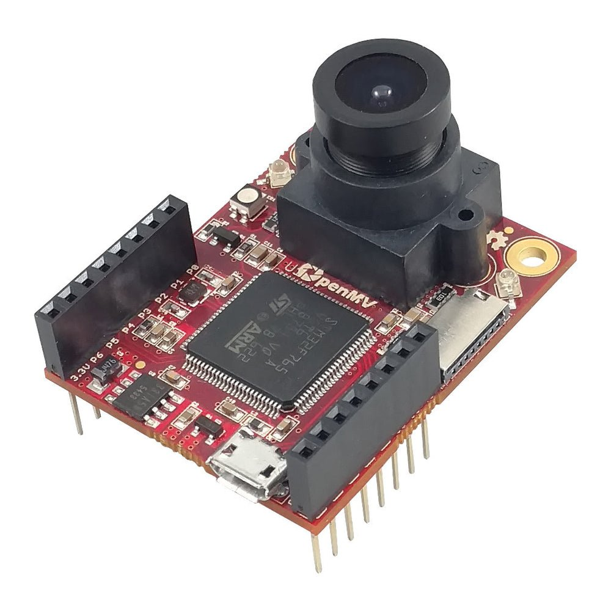
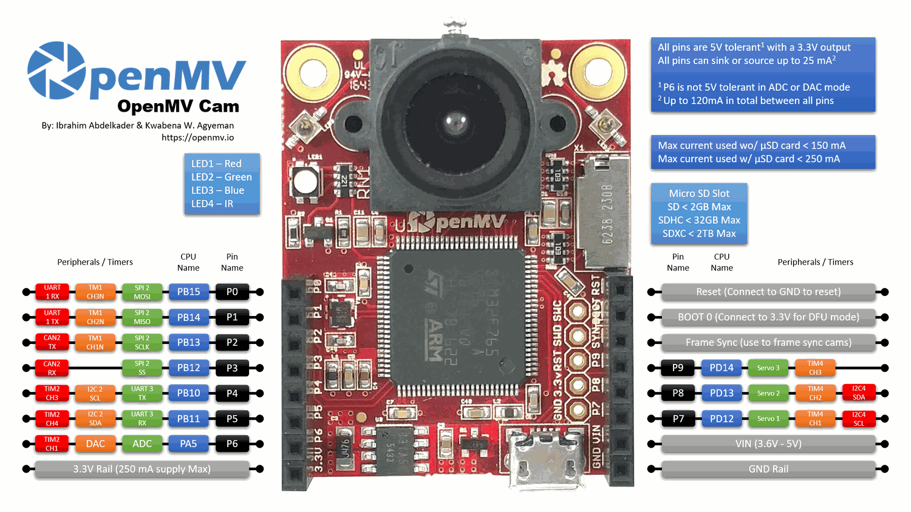

OpenMV Cam M7¶
OpenMV Cam M7 เป็นบอร์ด machine vision แบบ Cortex‑M7 ที่สร้างบน STMicroelectronics STM32F765 ที่ 216 MHz พร้อม SRAM ภายใน 512 KB และแฟลชภายใน 2 MB sensor OV7725 ที่มาพร้อมกันสามารถถ่ายเฟรมระดับสีเทา 640×480 หรือ RGB565 320×240 ได้สูงสุด 150 FPS และหัวต่อผู้ใช้ 10 พินเปิดเผยอุปกรณ์ต่อพ่วง UART, I²C, SPI, CAN, ADC/DAC และ PWM
{kind=link}

สำหรับข้อมูลจำเพาะฉบับเต็ม รูปภาพ และขนาด ดูได้ที่ หน้าผลิตภัณฑ์ OpenMV Cam M7
คุณสมบัติเด่น¶
STMicroelectronics STM32F765 Cortex‑M7 ที่ 216 MHz
SRAM ภายใน 512 KB — ไม่มี SDRAM ภายนอก
แฟลชภายใน 2 MB (ไม่มีแฟลช QSPI ภายนอก)
sensor OV7725 — ระดับสีเทา 640×480 หรือ RGB565 320×240 ที่สูงสุด 150 FPS
USB ความเร็วเต็ม (12 Mb/s) — ปรากฏเป็น VCP + USB mass storage แก่โฮสต์
ช่อง microSD — SD สูงสุด 2 GB, SDHC สูงสุด 32 GB, SDXC สูงสุด 2 TB
พิน I/O 10 ตัว, ทนแรงดัน 5 V ด้วยเอาต์พุต 3.3 V, 25 mA ต่อพิน (รวม 120 mA ทั่วทั้งหัวต่อ), รองรับอินเทอร์รัปต์ P6 ไม่ ทนแรงดัน 5 V เมื่อใช้ในโหมด ADC หรือ DAC
LED RGB สำหรับผู้ใช้ และ IR LED กำลังสูง 850 nm สองดวง สำหรับการส่องสว่างในการมองเห็นที่แสงน้อย
Note
M7 ไม่มีชิปจัดการพลังงานบนบอร์ด: ไม่มีขั้วต่อแบตเตอรี่ ไม่มีที่ชาร์จแบตเตอรี่ ไม่มี ADC วัดแรงดันแบตเตอรี่ ไม่มี LED แสดงสถานะการชาร์จ/พลังงาน และไม่มีปุ่มเปิดปิดฮาร์ดแวร์ จ่ายพลังงานให้บอร์ดผ่าน USB หรือ VIN
แผนผังพิน¶
{kind=link}

ตารางอ้างอิงพิน¶
ชื่อพิน |
ฟังก์ชัน |
|---|---|
P0 |
UART1 RX / SPI2 MOSI |
P1 |
UART1 TX / SPI2 MISO |
P2 |
SPI2 SCK / CAN2 TX |
P3 |
SPI2 NSS (CS) / CAN2 RX |
P4 |
I2C2 SCL / UART3 TX / TIM2 CH3 |
P5 |
I2C2 SDA / UART3 RX / TIM2 CH4 |
P6 |
ADC / DAC / TIM2 CH1 |
P7 |
I2C4 SCL / TIM4 CH1 |
P8 |
I2C4 SDA / TIM4 CH2 |
P9 |
TIM4 CH3 |
RESET |
ดึงลง GND เพื่อรีเซ็ตบอร์ด |
SYN |
แผ่น frame‑sync — ต่อสายไปยัง camera sensor เท่านั้น |
BOOT0 |
ดึงขึ้น 3.3 V เมื่อเปิดเครื่องเพื่อเข้า DFU / ROM bootloader |
LED_RED |
ช่องสีแดงของ RGB LED (active low) |
LED_GREEN |
ช่องสีเขียวของ RGB LED (active low) |
LED_BLUE |
ช่องสีน้ำเงินของ RGB LED (active low) |
LED_IR |
IR LED กำลังสูง (ทั้งสองช่องขับพร้อมกัน) |
Note
แผ่น SYN บนหัวต่อเชื่อมต่อโดยตรงกับสาย trigger / การรับแสงของ camera sensor — ไม่ เชื่อมต่อไปยัง MCU บน M7 ขับหรืออ่านจากภายนอก โดยไม่สามารถสลับสถานะจาก MicroPython ได้
พินพลังงาน¶
3.3V — ราง 3.3 V แบบเรกกูเลต สำหรับชิลด์มีให้สูงสุด 250 mA (น้อยกว่าถ้าใช้ microSD card) ต่างจากกล้องรุ่นใหม่ พินนี้เป็นสองทิศทาง — ดูคำเตือนด้านล่าง
VIN — อินพุต 3.6 – 5 V จ่ายพลังงานให้บอร์ดผ่านตัวเรกกูเลตบนบอร์ด
GND — กราวด์ร่วม
Note
เมื่อมี USB และ VIN พร้อมกัน แรงดันที่ สูงกว่า จะเป็นตัวจ่ายพลังงานให้บอร์ด — ไดโอดบนบอร์ดเพียงแค่เลือกรางที่แรงกว่า
Warning
คุณ สามารถ จ่ายพลังงานให้ M7 โดยป้อน 3.3 V ตรงไปยังพิน 3.3V หากไม่ต้องการผ่านตัวเรกกูเลตบนบอร์ด ในกรณีนั้น ห้ามจ่าย VIN หรือ USB พร้อมกัน — การขับย้อนตัวเรกกูเลตขณะที่แหล่งจ่ายอื่นทำงานอยู่อาจทำให้กล้องเสียหายถาวร
Tip
ใช้ ตัวประมาณอายุแบตเตอรี่ เพื่อจำลองระยะเวลาที่ M7 จะทำงานบนแบตเตอรี่สำหรับรอบการทำงาน active / deep-sleep ที่กำหนด
พินสำหรับการกู้คืนและดีบัก¶
RESET — ดึงลง GND เพื่อรีเซ็ตบอร์ด การปล่อยให้ MCU เริ่มทำงานตามปกติ
BOOT0 — ดึงขึ้น 3.3 V ขณะเปิดบอร์ดเพื่อเข้า STM32 ROM bootloader (โหมด DFU) OpenMV IDE ใช้โหมดนี้ในการเขียน bootloader บนบอร์ดใหม่
บอร์ดเปิดเผยหัวต่อดีบัก SWD (RST / SWCLK / SWDIO) ถัดจากหัวต่อ GPIO ซึ่งเข้ากันได้กับอะแดปเตอร์ ST‑LINK และ SEGGER J‑Link
อุปกรณ์ต่อพ่วงบนบอร์ด¶
LED¶
M7 มี RGB LED สำหรับผู้ใช้หนึ่งดวงและ IR LED กำลังสูง 850 nm หนึ่งคู่:
RGB LED สำหรับผู้ใช้ — ควบคุมได้ด้วยซอฟต์แวร์ เปิดเผยเป็น
LED_RED,LED_GREENและLED_BLUEfrom machine import LED LED("LED_RED").on() LED("LED_GREEN").on() LED("LED_BLUE").on()
IR LED — LED ทั้งสองดวงถูกขับพร้อมกันผ่านพิน
LED_IRLED_IRต่อสายแบบ active high ในฮาร์ดแวร์ขณะที่เฟิร์มแวร์จัดการ LED บนบอร์ดอื่นทุกดวงเป็น active low ดังนั้นให้ใช้low()/high()แทนon()/off()(ซึ่งจะกลับสถานะ):from machine import LED ir = LED("LED_IR") ir.low() # turn IR illumination ON ir.high() # turn IR illumination OFF
Camera sensor¶
OV7725 ถูกขับผ่านโมดูล csi --- เซ็นเซอร์กล้อง
import csi
cam = csi.CSI()
cam.reset()
cam.pixformat(csi.RGB565)
cam.framesize(csi.QVGA)
cam.snapshot(time=2000) # let auto‑exposure settle
while True:
img = cam.snapshot()
sensor ถูกบัดกรีติดกับบอร์ด บน M7 — ไม่ได้อยู่บนโมดูลที่สามารถเปลี่ยนได้
microSD card¶
เมื่อใส่การ์ดจะถูก mount อัตโนมัติที่ /sdcard และสามารถใช้งานผ่านระบบไฟล์ปกติ:
import os
for entry in os.listdir("/sdcard"):
print(entry)
ตารางอ้างอิงบัส¶
GPIO¶
ใช้ machine.Pin เพื่ออ่านหรือขับพินที่พิมพ์ซิลค์สกรีนไว้ เอาต์พุตเป็น 3.3 V CMOS ทนแรงดัน 5 V ด้านอินพุต และสามารถซิงก์/ซอร์สได้สูงสุด 25 mA ต่อพิน (รวม 120 mA ทั่วทั้งหัวต่อ)
from machine import Pin
out = Pin("P0", Pin.OUT)
out.on()
out.off()
out.value(1)
inp = Pin("P1", Pin.IN, Pin.PULL_UP)
print(inp.value())
พินอินพุตใดก็สามารถส่งอินเทอร์รัปต์บนการเปลี่ยนขอบสัญญาณได้:
def handler(pin):
print("triggered:", pin)
Pin("P1", Pin.IN, Pin.PULL_UP).irq(
handler, Pin.IRQ_FALLING | Pin.IRQ_RISING,
)
UART¶
บัส |
TX |
RX |
|---|---|---|
UART1 |
P1 |
P0 |
UART3 |
P4 |
P5 |
from machine import UART
uart = UART(3, baudrate=115200)
uart.write("hello")
uart.read(5)
I²C¶
บัส |
SCL |
SDA |
|---|---|---|
I2C2 |
P4 |
P5 |
I2C4 |
P7 |
P8 |
from machine import I2C
i2c = I2C(2, freq=400_000)
i2c.scan()
i2c.writeto(0x76, b"hi")
ฮาร์ดแวร์เดียวกันนี้สามารถใช้ในโหมด target (slave) ผ่าน machine.I2CTarget เพื่อเปิดเผยบริเวณหน่วยความจำให้กับ I²C controller อื่น:
from machine import I2CTarget
buf = bytearray(32)
target = I2CTarget(2, addr=0x42, mem=buf)
SPI¶
บัส |
MOSI |
MISO |
SCK |
CS |
|---|---|---|---|---|
SPI2 |
P0 |
P1 |
P2 |
P3 |
from machine import SPI
from machine import Pin
spi = SPI(2, baudrate=10_000_000)
cs = Pin("P3", Pin.OUT, value=1) # CS is not driven by the SPI peripheral
cs.value(0)
spi.write(b"hello")
cs.value(1)
CAN¶
บัส |
TX |
RX |
|---|---|---|
CAN2 |
P2 |
P3 |
from machine import CAN
can = CAN(2, 500_000)
can.set_filters(None)
can.send(0x123, b"\xDE\xAD\xBE\xEF")
print(can.recv())
ADC และ DAC¶
P6 เป็นพินแอนาล็อกสำหรับผู้ใช้เพียงพินเดียว สามารถใช้เป็นอินพุต ADC 12 บิตหรือเอาต์พุต DAC
ADC — สเกลเต็มที่ 3.3 V ที่พิน:
from machine import ADC import time adc = ADC("P6") while True: voltage = adc.read_u16() * 3.3 / 65535 print(voltage) time.sleep_ms(100)
DAC — ผ่าน
pyb.DACค่า 8 บิตครอบคลุม 0–3.3 V:from pyb import DAC dac = DAC("P6") voltage = 1.65 dac.write(int(voltage / 3.3 * 255))
ในโหมด ADC หรือ DAC P6 ทนแรงดัน 3.3 V เท่านั้น — ห้ามป้อน 5 V
PWM¶
พิน |
ตัวจับเวลา / ช่อง |
|---|---|
P4 |
TIM2 CH3 |
P5 |
TIM2 CH4 |
P6 |
TIM2 CH1 |
P7 |
TIM4 CH1 |
P8 |
TIM4 CH2 |
P9 |
TIM4 CH3 |
Note
TIM1 ถูกสงวนไว้ โดยเฟิร์มแวร์เพื่อสร้างสัญญาณนาฬิกาพิกเซลของ camera sensor ดังนั้นช่อง TIM1 ที่อยู่บน P0/P1/P2 ทางกายภาพไม่สามารถใช้สำหรับ PWM ของผู้ใช้โดยไม่ทำให้กล้องเสีย
TIM4 ใช้ร่วมกับ pyb.Servo — การสร้าง servo ใหม่จะกำหนดค่า timer ทั้งหมดใหม่เป็น 50 Hz ดังนั้นอย่าผสม machine.PWM บน P7/P8/P9 กับ pyb.Servo ในสคริปต์เดียวกัน
ขับพินใดก็ได้ผ่าน machine.PWM
from machine import Pin, PWM
pwm = PWM(Pin("P7"), freq=1_000, duty_u16=32768)
บัสแบบ Software bit‑bang¶
machine.SoftI2C และ machine.SoftSPI ทำงานบน GPIO ใดก็ได้หากต้องการบัสเพิ่มเติม
Thermal sensor (นอกบอร์ด)¶
เฟิร์มแวร์รวมถึงไดรเวอร์ fir --- ไดรเวอร์เซนเซอร์ความร้อน (fir == far infrared) สำหรับอุปกรณ์ thermal imager ที่ต่อสายภายนอก:
MLX90621 — อาร์เรย์ IR 16 × 4
MLX90640 — อาร์เรย์ IR 32 × 24
MLX90641 — อาร์เรย์ IR 16 × 12
AMG8833 — อาร์เรย์ IR 8 × 8
ต่อสายโมดูลไปยังบัส I²C ของบอร์ดและอ่านเฟรมด้วย fir.init() + fir.snapshot()
import time
import image
import fir
fir.init() # auto‑detects the sensor
clock = time.clock()
while True:
clock.tick()
try:
img = fir.snapshot(x_scale=5, y_scale=5,
color_palette=image.PALETTE_IRONBOW,
hint=image.BICUBIC,
copy_to_fb=True)
except OSError:
continue
print(clock.fps())
ไดรเวอร์ fir คุยกับ sensor ผ่าน I²C 2 เท่านั้น — ต่อสายโมดูลไปยัง P4 (SCL) และ P5 (SDA)
การจับเวลา¶
time¶
โมดูล time ครอบคลุมการหน่วงเวลาแบบบล็อก, ticks แบบ monotonic และการวัดเวลาที่ผ่านไป:
import time
time.sleep(1) # seconds
time.sleep_ms(500)
time.sleep_us(10)
start = time.ticks_ms()
# ...do work...
elapsed = time.ticks_diff(time.ticks_ms(), start)
Virtual timer¶
machine.Timer กำหนดตาราง callback แบบ periodic หรือ one‑shot โดยไม่ใช้สล็อต hardware timer ส่งผ่าน -1 เป็น id เพื่อใช้ virtual (software) timer:
from machine import Timer
one_shot = Timer(-1)
one_shot.init(period=5_000, mode=Timer.ONE_SHOT,
callback=lambda t: print("once"))
periodic = Timer(-1)
periodic.init(period=2_000, mode=Timer.PERIODIC,
callback=lambda t: print("tick"))
ค่า period เป็นมิลลิวินาที เรียก deinit() เพื่อหยุดและปล่อยสล็อต
นาฬิกาเรียลไทม์¶
machine.RTC เก็บเวลา wall‑clock ระหว่างการรีเซ็ต:
from machine import RTC
rtc = RTC()
rtc.datetime((2026, 4, 30, 4, 12, 0, 0, 0)) # Y, M, D, weekday, h, m, s, subsec
print(rtc.datetime())
Watchdog¶
machine.WDT รีเซ็ตบอร์ดหากแอปพลิเคชันค้าง เมื่อเริ่มต้นแล้วจะหยุดหรือกำหนดค่าใหม่ไม่ได้ — ป้อนเป็นระยะในลูปหลักของคุณ:
from machine import WDT
wdt = WDT(timeout=5_000) # 5 second window
while True:
# ...do work...
wdt.feed()
ข้อมูลการบูตและรันไทม์¶
หน้าต่าง USB bootloader¶
ทุกครั้งที่เปิดเครื่อง กล้องจะรัน bootloader สั้นๆ (สองสามวินาที) ที่ช่วยให้ OpenMV IDE อัปเดตเฟิร์มแวร์โดยไม่ต้องให้ผู้ใช้เข้าโหมด DFU เมื่อหน้าต่างหมดเวลา bootloader จะส่งต่อให้ boot.py แล้วจึง main.py
สคริปต์ที่กำลังรันสามารถกลับเข้า bootloader ได้ตามต้องการโดยเรียก machine.bootloader()
import machine
machine.bootloader()
ระบบไฟล์และลำดับการบูต¶
เฟิร์มแวร์ M7 mount ระบบไฟล์สูงสุดสามอันเมื่อบูต:
แฟลชภายใน — mount ที่
/flashเสมอ โดยค่าเริ่มต้นจะมีmain.pyและREADME.txt; สร้างขึ้นในการบูตครั้งแรกmicroSD card — หากใส่การ์ดจะถูก mount ที่
/sdcardROMFS — ระบบไฟล์แบบอ่านอย่างเดียวและ memory‑mapped ที่
/romใช้สำหรับจัดส่งทรัพยากรข้อมูลขนาดใหญ่ (เช่น AI models) ที่ได้ประโยชน์จากการเข้าถึงแบบ zero‑copy mount อัตโนมัติโดย MicroPython เมื่อเริ่มต้น ก่อนที่ Python ของผู้ใช้จะรัน
หลัง mount ไดเรกทอรีการทำงานจะถูกตั้งค่าเป็น /sdcard เมื่อมีการ์ดอยู่ มิฉะนั้นจะเป็น /flash จากนั้น interpreter จะรันสคริปต์จากไดเรกทอรีนั้น:
boot.pyถูกรันทุกครั้งที่ soft reset (cold boot,Ctrl‑Dจาก REPL หรือทุกครั้งที่สคริปต์ที่รันอยู่ return)main.pyถูกรัน เฉพาะเมื่อ cold boot ทันทีหลังจากboot.pyการ soft reset ถัดมาจะรันboot.pyใหม่แต่ไปยัง REPL โดยตรง — หากต้องการรันmain.pyใหม่ต้องรีเซ็ตบอร์ดอย่างสมบูรณ์
การวาง boot.py หรือ main.py ลงบน SD card จะแทนที่ไฟล์ใน flash โดยไม่แตะต้อง — ทั้งสองไฟล์จะถูกค้นหาในไดเรกทอรีบูต (/sdcard เมื่อ mount การ์ด มิฉะนั้น /flash)
main.py ค่าเริ่มต้นที่มาพร้อมกับบอร์ดที่เพิ่งแฟลชใหม่จะกะพริบช่อง สีน้ำเงิน ของ RGB LED สำหรับผู้ใช้เป็น heartbeat (สองพัลส์สั้น, ช่วงพักสั้น) เพื่อให้ทราบว่าเฟิร์มแวร์บูตเรียบร้อยโดยไม่มีโฮสต์เชื่อมต่ออยู่
sys.path ถูกขยายเพื่อรวมระบบไฟล์ทั้งสามและซับไดเรกทอรี lib/ ดังนั้นโมดูลที่ import ได้สามารถอยู่ใน /flash/lib, /sdcard/lib หรือ /rom/lib
เพื่อบังคับให้ระบบเพิกเฉยต่อ SD card ที่ใส่อยู่ (เช่น เพื่อรัน main.py ใน flash แม้มีการ์ดอยู่) สร้างไฟล์เปล่าชื่อ SKIPSD ที่ root ของ /flash
เมื่อเชื่อมต่อผ่าน USB ระบบไฟล์บูต (/sdcard หากมีการ์ด มิฉะนั้น /flash) ยังแสดงเป็น USB mass‑storage drive บนโฮสต์ด้วย ทำให้แก้ไข boot.py, main.py และไฟล์อื่นๆ ได้โดยตรง Eject ไดรฟ์ก่อนรีเซ็ตกล้อง เพื่อให้โฮสต์ flush การเขียนที่ cache ไว้
Note
เนื่องจาก OS จัดการไดรฟ์เป็น passive block device ไฟล์ที่สร้างหรือแก้ไขโดยโค้ดที่รันบน OpenMV Cam จะไม่แสดงขึ้นจนกว่าโฮสต์จะ re‑mount ไดรฟ์ หาก OS และ OpenMV Cam เขียนระบบไฟล์เดียวกันพร้อมกัน OS จะชนะและเขียนทับการเปลี่ยนแปลงของกล้อง ใช้ SD card สำหรับข้อมูลที่สคริปต์เขียนกลับ และ remount ก่อนอ่านไฟล์เหล่านั้นจากโฮสต์
Note
ช่อง สีแดง ของ RGB LED สำหรับผู้ใช้อาจสว่างขึ้นชั่วคราวขณะที่โฮสต์กำลังอ่านหรือเขียน USB mass‑storage drive — นี่คือตัวแสดงกิจกรรมที่ขับโดยเฟิร์มแวร์ ไม่ใช่ข้อผิดพลาด
ขนาดพื้นที่จัดเก็บ¶
M7 มาพร้อมกับ:
/flash— ระบบไฟล์ FAT 96 KB อ่าน/เขียน/rom— ROMFS แบบ memory-mapped อ่านอย่างเดียว 256 KB/sdcard— ขนาดเต็มของ microSD card ที่ใส่ไว้ (เมื่อมีการ์ด) อ่าน/เขียน
ตัวแสดง Hard‑fault¶
หาก RGB LED สำหรับผู้ใช้วนผ่านสีทั้งหมดอย่างรวดเร็ว — เร็วพอที่มักดูเหมือน LED สีขาวที่กะพริบ มากกว่าสีที่แยกจากกัน — เฟิร์มแวร์พบ hard fault ที่ไม่สามารถกู้คืนได้ แฟลชเฟิร์มแวร์ใหม่เพื่อกู้คืน หากแฟลชใหม่ไม่ช่วย บอร์ดอาจเสียหายทางกายภาพ
ไลบรารีซอฟต์แวร์¶
ดู รายการไลบรารี สำหรับรายการโมดูลทั้งหมด — รวมถึงโมดูลที่มีเฉพาะใน M7 build